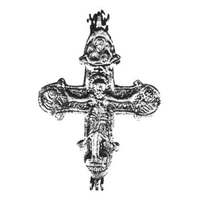
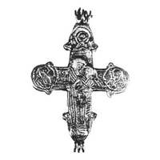

Catalog › CE-1022 · KOR2003-III.1.1.48
Encolpion întreg: imagini în relief apropiate de modele dar grosolane, sfinți în niello extrem de primitivi
sec. după model XII–XIII (1101–1300) · Șamraevka, regiunea Kiev, Ucraina · Muzeul de Istorie a Orașului Kiev (MIK), Kiev, inv. № А 4084
double-sided reliquary cross (enkolpion), aramă; c. după model XII–XIII (1101–1300); found at Șamraevka, regiunea Kiev, Ucraina; kept at Muzeul de Istorie a Orașului Kiev (MIK), Kiev.




Identificare
- Categorie
- Encolpion bivalv (relicvar)
- Material
- Aramă
- Tehnică
- Turnare în relief; Gravare (incizie); Niello
- Stare
- Întreagă
- Dimensiuni
- Î 80 × L 65 mm
Iconografie
- Descriere avers
- Encolpion întreg. Imaginile reliefate ale lui Hristos răstignit și ale Maicii Domnului sunt apropiate de modelele inițiale, deși foarte grosolane; imaginile sfinților din cele 3 medalioane sunt extrem de primitive, executate cu linii late și adânci, fără niello; în aceeași tehnică sunt făcute inscripții indescifrabile (poate imitație de inscripții).
Datare și atribuire
- Datare
- sec. după model XII–XIII (1101–1300)
- Centru
- Necunoscut
- Tipologie
- Korzukhina–Peskova 2003, tip III 1 1
Descoperire
- Localitate
- Șamraevka
- Regiune
- regiunea Kiev
- Țară
- Ucraina
- Context
- Necunoscut
Păstrare și referințe
- Colecție
- Muzeul de Istorie a Orașului Kiev (MIK), Kiev
- Nr. inventar
- № А 4084
- Bibliografie
- G. F. Korzukhina, A. A. Peskova, Древнерусские энколпионы. Нагрудные кресты-реликварии XI–XIII вв., Sankt-Petersburg, 2003 [Korzukhina–Peskova 2003], p. 107, cat. nr. III 1 1/48, reprodusă la Табл. 54 (planșe, p. 296). Bibliografie citată în sursă: Пекарська, Пуцко 1989, 85–86, рис. 1, 3 (aici data a doua pătrime XII).
- Figura
- Табл. 54
- Planșe
- Korzukhina–Peskova 2003, Табл. 54 (planșă fără paginație proprie în PDF; p. 296 tipărită)
- Observații
- Datare după Peskova: sec. după model XII–XIII. Circumstanțe: Începutul sec. XX. Sursa menționează niello în rândul de tehnică, dar descrierea spune „fără niello”. Foto: O. V. Bondarenko. Coordonate: nu sunt date în sursă.
Citare: Corpus Encolpiorum, CE-1022, Encolpion întreg: imagini în relief apropiate de modele dar grosolane, sfinți în niello extrem de primitivi, https://vitaliejosanu1979-ux.github.io/primul-meu-proiect/piese/KOR2003-III.1.1.48/ (accesat 2026-10-17).